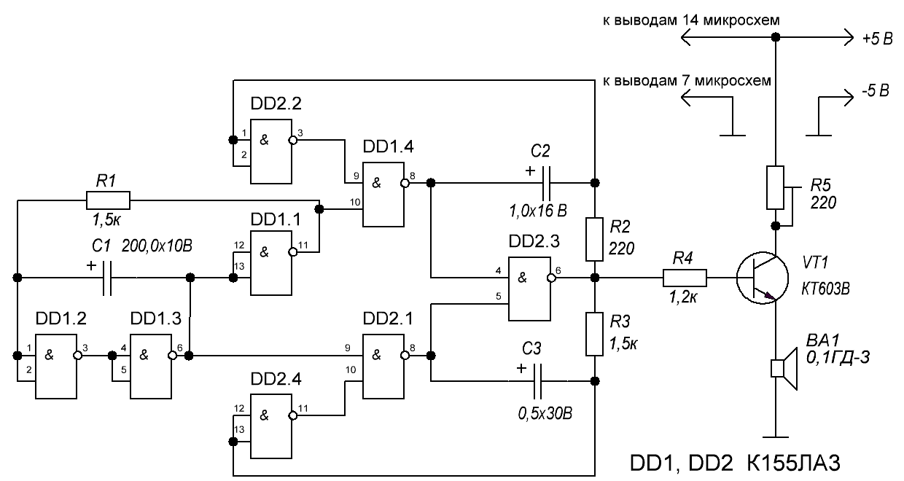

Двухтональный звонок на микросхеме
Приведенная схема (рис. 1) - это генератор импульсов на логической микросхеме, который можно использовать в качестве двухтонального звонка

Рис. 1 - Схема двухтонального звонка
Детали
- Резисторы типа МЛТ-0,125,
- подстроечный резистор типа СП3-1Б;
- конденсаторы С1-СЗ типа К50-6;
- микросхема К155ЛАЗ, К133ЛАЗ, К131ЛАЗ, К555ЛАЗ;
- транзисторы КТ603В, КТ608, КТ503 с любым буквенным индексом.
Источником питания служат четыре последовательно соединенных аккумулятора Д-0,1, батарея 3336Л или стабилизированный выпрямитель на 5 В.
Описание схемы
Двухтональный звонок на микросхемах собран на двух микросхемах и одном транзисторе. Логические элементы D1.1—D1.3 микросхемы К155ЛАЗ, резистор R1 и конденсатор С1 образуют переключающий генератор вырабатывающий управляющие импульсы. Частота импульсов зависит от емкости конденсатора С1 и сопротивления резистора R1. При указанных на схеме номиналах частота переключений генератора равна 0,7...0,8 Гц.
При включении питания конденсатор С1 начинает заряжаться через резистор R1. По мере заряда конденсатора повышается напряжение на его обкладке, соединенной с выводами 1, 2 логического элемента DL2. Когда оно достигнет 1,2… 1,5 В, на выходе 6 элемента D1.3 появится сигнал логической «1» (« 4 В), а на выходе 11 элемента D1.1 — сигнал логического «0» (« 0,4 В).
После этого конденсатор С1 начинает разряжаться через резистор R1 и элемент DLL . В итоге на выходе 6 элемента D1.3 будут формироваться прямоугольные импульсы напряжения. Такие же импульсы, но сдвинутые по фазе на 180°, будут на выводе 11 элемента D1.1, выполняющего роль инвертора.
Продолжительность заряда и разряда конденсатора С1, а значит, частота переключающего генератора, зависит от емкости конденсатора С1 и сопротивления резистора R1. При указанных на схеме номиналах этих элементов частота переключающего генератора составляет 0,7…0,8 Гц.
Импульсы переключающего генератора подаются на генераторы тона. Один из них выполнен на элементах D1.4, D2.2, D2.3, другой — на элементах D2.4, D2.3. Частота первого генератора — 600 Гц (ее можно изменять подбором элементов С2, R2), частота второго — 1000 Гц (эту частоту можно изменять подбором элементов СЗ, R3).
При работающем переключающем генераторе на выходе генераторов тона (вывод 6 элемента D2.3) будет периодически появляться то сигнал одного генератора, то сигнал другого. Затем эти сигналы поступают на усилитель мощности (транзистор VT1) и преобразуются головкой В1 в звук. Резистор R4 необходим для ограничения тока базы транзистора.
Подстроечным резистором R5 можно подобрать нужную громкость звучания.
Источники:
radio-uchebnik.ru - Звонок на микросхеме
radioslon.chernykh.net - Двухтональный звонок на двух микросхемах К155ЛА3